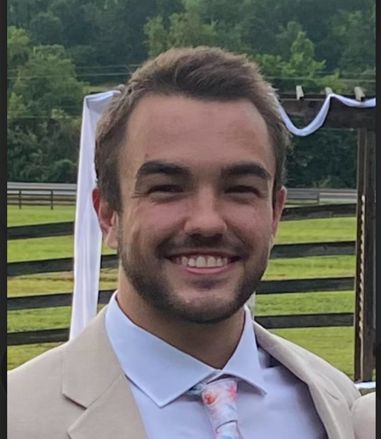

Phone: (615) 495-8075
Email: cmtice@crimson.ua.edu
Major: Accounting
Minor: Professional Accounting
GPA: 4.0 / 4.0
The University of Alabama, Tuscaloosa, AL
Bachelor of Science in Commerce and Business Administration – December 2024
Expected Graduation with 150 Hours: May 2026
Major GPA: 4.0 / 4.0
Computer Skills: Microsoft Office, Alteryx, Tableau
Programming: Intermediate Python
June 2025 – August 2025
January 2025 – March 2025
June 2024 – August 2024